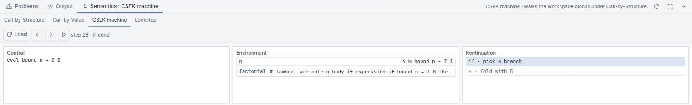

Reduction you can drive by hand
B-Lambda evaluates every program three times, by three independent methods, and then checks that they agree. This chapter is about the four views that let you watch that happen — and about the one number that legitimately differs between them.
The Semantics dock
Open the bottom panel with Ctrl + J and choose Semantics. Four tabs — and the dock's own tab relabels itself to whichever you are on, so it reads Semantics · Lockstep rather than a bare Semantics:
| Tab | Shows |
|---|---|
| Call-by-Structure | Substitution reduction under the default strategy, drawn as blocks |
| Call-by-Value | The same, with arguments reduced before they are substituted |
| CSEK machine | An environment machine: control, structure, environment, kontinuation |
| Lockstep | Substitution, the CSEK machine and the register VM, side by side |
A reduction trace is always of something. The Call-by-Structure and Call-by-Value tabs stay empty until you pick one, and prompt you: “Right-click an application block and choose Call-by-Structure or Call-by-Value.” The context menu on any application block carries Evaluate – Call-by-Structure, Evaluate – Call-by-Value and Show Type and Value — the last of which opens the Block Info dialog, whose value section is headed Value (Call-by-Structure) so you always know which strategy produced the number you are reading. The CSEK and Lockstep tabs instead have their own Load button and run the whole program.
Call-by-Structure
Call-by-Structure (CbS) is B-Lambda's default evaluation strategy, as it is in MnL. It is the executable form of the λVis calculus, and the single idea behind it is this: a value does not have to arrive stripped of the expression that produced it.
CbS is strict in its argument. It evaluates the argument first, exactly as
Call-by-Value does, and exactly once. What differs is what gets bound. CbV binds the bare
value. CbS binds a structured value — the computed value paired with the
structure it came from, written Vp ⊗ Vv:
(λx. x + x) (3 * 7)
CbS: evaluate the argument once → 21, retaining (3 * 7)
substitute the PAIR → (21 ⊗ 3 * 7) + (21 ⊗ 3 * 7) → 42
the multiplication happens ONCE; both sites SHOW 3 * 7
CbV: evaluate the argument once → 21
substitute the bare value → 21 + 21 → 42
the multiplication happens ONCE; the 3 * 7 is goneBoth reach 42, and both do the same amount of arithmetic. The difference is not
work, it is carriage. Under CbS the argument's original structure is still legible at
every place the parameter was used, so you can read off where a number came from without
re-deriving it. That is what the Copy vs Lookup (CbS ⇄ CbV) example is built
to show.
This is the point most easily misread. Seeing 3 * 7 twice in a CbS trace does
not mean the multiplication ran twice. It ran once; both occurrences are the same
retained structure being displayed. CbS costs no extra reductions over CbV — it only keeps
more of the derivation visible.
An argument that is already a value — a number, a boolean, or a λ — has
nothing to retain, so it binds bare with no ⊗ at all. The pair only appears when
the argument actually had to be reduced.
The trace itself renders as a live Blockly workspace, not as text, with the substituted regions
labelled — Substituted block for parameter, Function body of CbS — so
you can tell which part of the new term came from where. Where a value carries structure, the step's
block comment adds a pair: line reading 21 ⊗ (3 * 7) alongside the
usual term: and value: lines.
Retained structure is real structure, so the trace of a deeply recursive program is genuinely big — the Factorial 5 trace unrolls the whole recursion as blocks. That is the honest picture of what CbS records, but it is awkward to read in a short panel. Maximise the dock, and use Run: Arrange Reduction Steps from the command palette to lay the steps out. For learning the strategy itself, start with a small term like Copy vs Lookup rather than factorial.
The rules CbS fires
The reduction rules carry their λVis names, and the step label under the trace names the one that just fired:
| Rule | Fires when |
|---|---|
E-Beta |
A function is applied: the parameter is bound to the structured value |
E-BetaS |
The function being applied itself carries a visual, so the call is framed |
E-Frame |
A framed body has produced its value and the visual frame is merged back in — shown as merge the visual frame (E-Frame) |
E-FixBeta / E-FixS |
A letrec binding unfolds, plain and structured respectively |
E-UnOp / E-BinOp |
A primitive operator is applied to its operands |
E-Render |
A structured value is rendered back to the visual surface |
Frames are a CbS-only construct: a term of the form (Vv ▷ E) is an
expression evaluating underneath a retained visual, and E-Frame is what
collapses it once the inside is done. Nothing downstream of the semantics sees them — the
compiler pipeline erases frames entirely.
Call-by-Value
Call-by-Value reduces the argument to a value first, then substitutes that value. It is the strategy most real functional languages use, and it is available here for exactly one reason: so you can put it next to CbS and see what the choice keeps and what it throws away.
Since CbS is also strict, the two strategies agree on when the argument is evaluated and on how many times. Put the two tabs side by side on Copy vs Lookup and the traces have the same shape; what differs is that CbV's substituted occurrences are bare numbers where CbS's still carry the expression that produced them.
Everything else about the tab is identical — same block rendering, same controls, same right-click entry point.
No reduction under a binder
Under both strategies, B-Lambda does not reduce inside the body of an abstraction. A λ is a value. Its body is only reduced once an application has substituted something for the parameter.
λx. (2 + 3) -- stays as it is. Already a value.
(λx. (2 + 3)) 7 -- now the body reduces: → 5The Normal Form example loads a term that is already in normal form, so you can confirm that the stepper genuinely refuses to go further rather than merely happening not to. This matches MnL's behaviour, and it is why the two languages' reduction traces can be compared at all.
The CSEK machine
The second, independent evaluator. Control, Structure, Environment, Kontinuation.
The extra letter here is not the one in
B-MJ's CESK machine, where S is
a store and objects live on a heap. B-Lambda has no heap. Its S is the
structured value — the machine's image of
Vp ⊗ Vv, a computed value paired with the block it was
computed from. Two different machines, two different fourth letters.

step n · rule — the rule that just fired is
named next to the step count.Three columns, in machine order:
- Control — what the machine will evaluate next.
- Environment — the current bindings, innermost first, with shadowed names
dimmed. A binding that carries structure prints as its value, then
⊗, then the block it retained —21 ⊗ 3 * 7. Aletrecbinding prints with an hourglass,⛸, because it is the one thing the machine still stores unevaluated. - Kontinuation — the pending work, innermost first. Empty reads (empty — top level).
Because CbS is strict, the frames spell out what is being deferred and why:
| Frame reads | Meaning |
|---|---|
| apply · evaluating arg strictly, then binding value ⊗ structure | The CbS application frame. It says outright that the argument is being evaluated now, and that the pair is what will be bound. |
| bind x · evaluating strictly, then binding value ⊗ structure | The same thing for a let right-hand side. |
| frame ▷ · merge block into the result | A visual frame waiting to be merged — the E-Frame step. |
| apply · waiting for the argument | The plain Call-by-Value application frame. |
Controls are Load, Back, Step and Play. If you edit the program while a machine is loaded, the panel says Program changed — load it again to restart rather than silently stepping a stale term. When it finishes it reports Value after n step(s); when it cannot, it says ⨤ stuck after n step(s) and why.
The step function is pure: it returns a new state rather than mutating the current one. So Back does not re-run the program from the beginning and hope to land in the same place — it restores the exact earlier state. This is also what makes the machine safe to compare against the substitution trace.
The environment's structured entry is the machine's counterpart of the substitution trace's retained
structure: where the rewriter shows 3 * 7 beside the 21, the
machine binds the two together in one entry. Neither recomputes anything, which is why the
machine fires the same salient rules in the same order as the substitution trace —
the invariant the Lockstep view checks. Note that the CSEK tab has no per-tab strategy switch
— it runs the language default, CbS.
Lockstep
The tab that ties everything together. Lockstep runs three evaluators on the same program and pairs them up:

- Left — the substitution state, as a block tree.
- Middle — the CSEK machine state that has “caught up” to it.
- Right — the register VM, with its frames and registers.
The status line counts matched salient rules and flags divergence. In sync means the substitution semantics, the abstract machine and the compiled bytecode all agree on this program, at this step, under this strategy — the operational-correspondence claim, executed rather than asserted. If it breaks, the badge names both sides: ⚠ diverged — CSEK reason · VM reason.
The CSEK machine is checked per event: each rule it fires must be the same rule, in the same order, as the substitution trace. The register VM is checked per count — it has been through nine lowering stages by then, so what is claimed of it is that it performs the same number of salient steps and reaches the same value, not that its instructions line up one-to-one.
Unlike the CSEK tab, Lockstep keeps a CbS / CbV switch, defaulting to CbS, so you can check the correspondence under either strategy. If a trace cannot be built at all the panel says so — Could not build the lockstep trace — rather than looking like a program with no reductions.
Why step counts differ
Watch Fig. 2 for a moment and the two counters drift apart — the machine's is always well ahead of the substitution trace's. Neither is wrong. They are counting different things.
| Counts | One press advances | |
|---|---|---|
| CSEK machine | Every transition, including the administrative ones: environment lookups, pushing and popping continuation frames, descending into a sub-term, returning a value, merging a visual frame. | one machine transition |
| Substitution trace | Only salient reductions — beta,
if-true / if-false, and primitive prim …
steps. The human-visible redexes. |
one visible redex |
So one reduction frame corresponds to several machine micro-steps, and the machine's number is always
the larger. E-Frame is a clear case: merging a visual frame is real work for the
machine but is not a redex anyone would point at, so it advances the machine's counter and not the
trace's. Lockstep advances the machine in bulk between salient rules — the bookkeeping
transitions still increment the machine's count but do not add a reduction frame. Both reach the
same normal form, and the salient-event count confirms they agree on the trace that matters.
A substitution counter compared against a machine counter is always coarser, because the machine also counts the steps the rewriter never names. Two counters at the same granularity stay equal — which is why B-MJ's A vs B tab shows both its machines finishing in exactly 51 steps.
You can also reach the traces without the dock: More → Call-by-Structure Trace,
Call-by-Value Trace and Lockstep Debugger, or the matching Run:
commands in the palette. The CSEK machine is the one view with no More entry — reach
it from the workspace's Run button, the Semantics tab strip, or
Run: CSEK Machine in the palette.